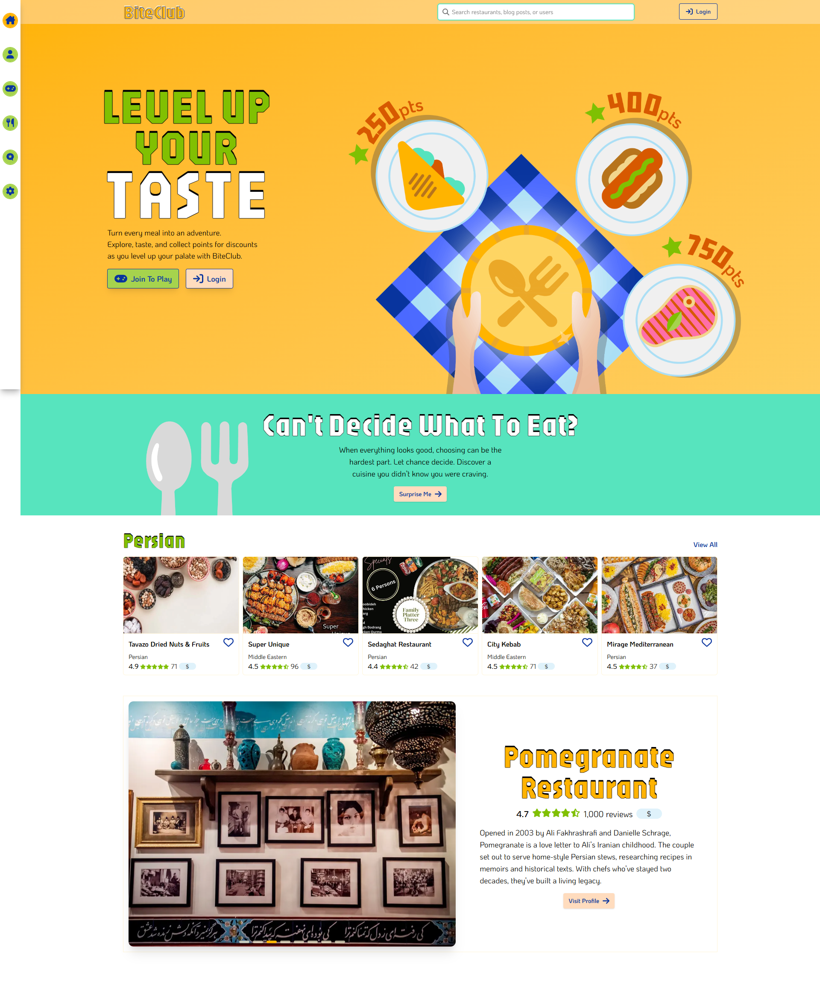

BiteClub
(ADOBE / FIGMA / NEXT.JS / REACT / TAILWIND)

BiteClub's landing page
Project Overview
My team designed and developed a food exploration web application called BiteClub, which aims to help Gen Z and Millennials feel less anxious about choosing what to eat, discover Toronto’s diverse food cultures, and encourage picky eaters to step outside their comfort zones.
My Role
- Lead UX/UI Designer
- Lead Front-End Developer
My Tools and Languages
- Adobe Illustrator
- Figma
- Next.JS
- React
- Tailwind CSS
- Supabase
Key Features
- Participate in food challenges to try new cuisines
- Get AI-personalized restaurant recommendations
- Search across restaurants, blogs, and users to quickly find relevant content
- Discover restaurants through detailed profiles and user reviews
- Read and write blogs to share food experiences and opinions
- Create a user profile to track favourites
- Follow other users to stay updated on their posts
- Get a random cuisine suggestion with a “Surprise me” button
- See a different featured cuisine each week
UX Case Study
Problem Definition
Although many food discovery and review apps like UberEats and Yelp exist, they don’t effectively help users decide what to eat. Research shows that 86% of Gen Z adults experience “menu anxiety,” feeling stressed or overwhelmed by too many options and the fear of choosing wrong.
Audience
BiteClub is for Gen Z and Millennials in the Greater Toronto Area (GTA) who experience menu anxiety or want help stepping outside their comfort zones to explore a wider range of cuisines.
The Team
- Lead UX/UI Designer / Front-End Developer: Cesca Dela Cruz (me!)
- Full-Stack Developer: Nicole Chan
- Back-End Developer: Irish Banga
- Back-End Developer: Olha Chovhaniuk
- AI Developer: Jashanpreet Singh

My Contribution
As the lead UX/UI Designer, I guided a non-designer team through the design thinking process, helping define the problem, prioritize user needs, and frame solutions around user-centred principles. I led decisions about how the app interacts with the user, how it looks, and why certain design choices were made, ensuring it remained focused on solving the users' problems.
As the only team member familiar with Figma, I translated our low-fidelity wireframes into high-fidelity mockups. I also designed the product logo, created custom graphics, and built most of the front-end components during development.
Constraints
- The project needed to meet course requirements for complexity and feature count, so not every feature directly addressed the main user problem.
- Limited time due to course schedule: Four weeks for design and twelve weeks for development
- Inability to conduct primary user research or usability testing due to course curriculum
Process & Design Decisions
Identifying pain points
We began our project by conducting secondary research to better understand decision fatigue and menu anxiety. This research helped us identify common pain points in existing food discovery platforms:
- limited help with decision-making
- choice overload
- larger restaurants overshadowing smaller businesses
Based on these insights, we brainstormed solutions and prioritised features that could address the users' pain points. As mentioned, some features were included to meet course requirements for complexity and scope, and were not intended to directly address the core user problem.
Reducing pressure through food challenges
I came up with the idea of food challenges as a way to reduce menu anxiety. Gamifying food exploration shifts the focus from choosing the perfect meal to completing a challenge, making it easier for users to try new cuisines without overthinking their choice.
Addressing choice overload with randomness
We added a “Surprise me” button for users who feel stuck deciding what to eat. Instead of asking users to choose, users are shown restaurants from a random/surprise cuisine. We originally planned to show a random restaurant profile, but due to feasibility constraints, the feature was scoped to cuisines. Even so, removing the need to choose helps reduce decision stress and encourages trying something new.
Highlighting hidden gems
A weekly cuisine spotlight was also implemented to reduce choice overload and give visibility to less popular cuisines that are often overshadowed by larger, more well-known restaurants. Rotating the spotlight helps give different cuisines equal exposure and encourages exploration.
An appetizing palatte
To develop BiteClub’s colour palette and brand identity, I asked my team members to create a moodboard. This would allow us to explore everyone’s ideas and narrow down the visual direction together.

Olha's moodboard

Nicole's moodboard

Irish's moodboard
We chose Nicole’s palette of bright greens, yellows, blues, and peaches because we wanted our application to feel vibrant, playful, and inviting, reflecting the fun, exploratory spirit of BiteClub. These colours were also reminiscent of fresh fruits and vegetables, such as citrus and leafy greens, which we felt was especially fitting. We also used this time to decide on font styles. Similarly, we chose styles that were fun, playful, and inviting.


Exploring colour through wireframes
While my teammates created their moodboards, I refined our low-fidelity grayscale wireframes into higher-fidelity ones. I then applied the colour from their moodboards, which guided our team in finalizing the palette.


We experimented with different colours, and chose Nicole's palatte of greens, yellows, blues, and peaches (BOTTOM LEFT).
From wireframes to mockups
Once we decided on the colour palette and font styles, I applied them to the polished grayscale wireframes to create the high-fidelity mockups.


I polished Irish's grayscale wireframe of the restaurant profile, ensuring it met UX standards. His design is on the LEFT, and mine is on the RIGHT.


Mockup of our "Challenges" page where users can participate in food challenges to earn points.
The Final Deployed Application
Building BiteClub highlighted how design can directly influence user confidence and emotional experience. By focusing on reducing menu anxiety, I learned how small design choices, such as reframing exploration through challenges or offering a clear starting point, can significantly change how users feel when making decisions. The final product reflects a balance between user needs, technical feasibility, and course constraints.

Login page

Restaurant profile page

"Add Review" form on Restaurant profile

User profile page

AI-generated food challenges page: Users can complete challenges and earn points by visiting specified restaurants.

Challenge details form: To progress through a challenge, the user can check-in at a specified restaurant. When their location is confirmed, they have completed a challenge step.

Challenge completed modal: When the user completes a challenge, the user is notified.

Search results page

User settings page